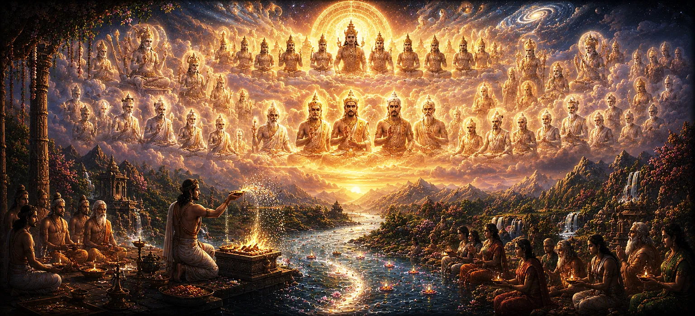

The Power and Glory of the Pitṛs
Following the survey of earthly sovereignty and royal lineages in Chapter 39, the fortieth chapter of Uma Samhita turns its gaze toward the celestial sphere to illuminate the sublime power, divine stature, and immense glory of the Pitrs (ancestral progenitors).
This chapter details how the Pitrs occupy a revered position in cosmic architecture, sustaining both gods and mortals through their grace, blessings, and acceptance of sacred offerings.
Through sacred discourse, the scripture reveals that honoring the progenitors is essential for spiritual alignment, family prosperity, and ultimate liberation under the shelter of Lord Shiva.
Chapter 40 Highlights
Celestial Stature
Explores the exalted cosmic position and divine authority held by the Pitrs.
Sacred Offerings
Details the significance of Shraddha and tarpan in nourishing ancestral energies.
Lineage Continuity
Emphasizes how ancestral grace secures family welfare and generational stability.
Protective Grace
Illustrates how pleased progenitors shield their descendants from adversity.
Cosmic Order
Connects the role of the Pitrs directly to the maintenance of universal harmony.
Shiva's Blessing
Unites ancestral reverence with supreme devotion to Lord Shiva.
Core Topics in This Chapter
- 01 Origin and Cosmic Manifestation of the Pitrs →
- 02 Exalted Stature Among Gods and Sages →
- 03 The Transforming Power of Shraddha Rites →
- 04 Nourishing the Universe Through Ancestral Grace →
- 05 Fulfilling Duties and Clearing Ancestral Debts →
- 06 Bestowing Blessings, Wealth, and Longevity →
- 07 Protection Against Misfortune and Unseen Obstacles →
- 08 Spiritual Elevation and Liberation of Souls →
- 09 The Convergence of Ancestral Devotion and Shiva Grace →
- 10 Transition to the Attainment of the Seven Hunters →
Origin and Cosmic Manifestation of the Pitrs
Chapter 40 begins by unveiling the divine origin of the Pitrs, who emerged from the mind and cosmic body of the creator to guide and sustain human evolution.
The scripture explains that these luminous progenitors dwell in celestial realms specifically assigned for their rest and sovereignty, radiating peace across the cosmos.
Their existence bridges the mortal plane with the highest transcendental dimensions.
Exalted Stature Among Gods and Sages
The text underscores the supreme rank of the Pitrs, noting that even gods honor them during grand sacrifices, recognizing their foundational role in universal sustenance.
Enlightened sages worship the Pitrs with profound reverence, knowing that spiritual progress requires honoring the roots from which one has blossomed.
Their authority spans across all epochs of creation.
The Transforming Power of Shraddha Rites
A major portion of the chapter focuses on the sacred practice of Shraddha and tarpan, detailing how offerings made with faith directly nourish the ancestral souls.
The scripture emphasizes that sincerity, purity of mind, and proper execution of rites are far more potent than grand material displays.
When performed correctly, these rituals create an unbreakable bond of mutual grace between the living and the departed.
Nourishing the Universe Through Ancestral Grace
The text reveals that when the Pitrs are gratified by the devotion of their descendants, they in turn shower abundance, rain, crops, and vitality upon the entire earth.
Their satisfaction sustains the biological and ecological balance of nature, proving that ancestral welfare is intimately tied to planetary well-being.
The cosmic ecosystem thrives when respect for lineage is maintained.
Fulfilling Duties and Clearing Ancestral Debts
Human beings are born with an innate debt to their progenitors (pitru rin). Chapter 40 explains how fulfilling sacred duties frees individuals from this heavy karmic obligation.
Neglecting these responsibilities brings spiritual stagnation, whereas honoring them opens the doors to higher divine realizations.
Fulfillment of duty is presented as a primary spiritual practice.
Bestowing Blessings, Wealth, and Longevity
Pleased ancestors act as divine protectors who eagerly bestow long life, health, intellectual brilliance, fame, and material prosperity upon their families.
No household can truly flourish without the quiet, unseen blessings of its forebears watching over them.
Ancestral grace acts as a perennial fountain of familial protection.
Protection Against Misfortune and Unseen Obstacles
The scripture notes that families devoted to ancestral remembrance are shielded from sudden calamities, malevolent influences, and persistent obstacles in life.
The protective shield of the Pitrs neutralizes negative karma and paves a smooth path for their descendants to achieve righteous goals.
Their watchful eye wards off unseen dangers.
Spiritual Elevation and Liberation of Souls
Beyond material gifts, the ultimate glory of the Pitrs lies in their capacity to elevate souls toward spiritual emancipation and higher celestial abodes.
Through the devotion of living descendants, ancestors trapped in intermediate states find release and progress toward supreme light.
This reciprocal elevation forms the core of Vedic liberation philosophy.
The Convergence of Ancestral Devotion and Shiva Grace
The chapter concludes its doctrinal exposition by uniting ancestral reverence with supreme devotion to Lord Shiva, teaching that all progenitors ultimately derive their power from Shiva's will.
Worshipping the Pitrs with consciousness anchored in Shiva brings total spiritual fulfillment, bridging familial duty with liberation.
Shiva is the supreme master who sanctions and sanctifies all ancestral rites.
Transition to the Attainment of the Seven Hunters
Having established the profound power and glory of the Pitrs in Chapter 40, the narrative prepares to transition into the next remarkable tale.
The text sets the stage for Chapter 41, which will recount the inspiring attainment and spiritual liberation achieved by the seven hunters through divine grace.
Readers are carried forward into deeper dimensions of grace and devotion.
Key Teachings of Chapter 40
Divine Authority
The Pitrs hold an exalted celestial position, sustaining universal order.
Power of Shraddha
Sincere offerings directly nourish ancestral energies and secure their grace.
Ecological Balance
Gratified ancestors shower rain, crops, and abundance upon the earth.
Familial Shield
Ancestral protection shields descendants from sudden misfortunes and obstacles.
Debt Clearance
Fulfilling ancestral duties clears karmic obligations and fosters spiritual growth.
Ultimate Liberation
Ancestral devotion converges with Shiva grace to elevate souls to supreme light.
Spiritual Reflection
Chapter 40 reveals the profound interconnectedness of life, reminding us that we are never solitary beings floating through time. We stand upon the shoulders of countless generations whose love, labor, and prayers have shaped our existence. By honoring the Pitrs through sincere Shraddha, remembrance, and righteous living, we repay our foundational debts and unlock a wellspring of divine protection and grace. This chapter teaches us that ancestral reverence is not a mere ritualistic obligation, but a living spiritual bridge that connects our daily actions to cosmic harmony and the supreme shelter of Lord Shiva.
Living the Message of Chapter 40
Incorporate ancestral remembrance into your regular routine, honoring your forebears with gratitude, prayer, and adherence to ethical family values.
Perform designated Shraddha and tarpan rites with complete sincerity, viewing them as acts of profound love rather than mechanical chores.
Live a life of righteousness and devotion to Lord Shiva, knowing that your personal moral elevation honors your entire lineage.
Key Spiritual Concepts
Celestial ancestral progenitors who hold divine authority and sustain the universe.
Sacred ritual offerings performed with faith to nourish ancestral energies.
The ritual offering of water satisfying and gladdening the departed souls.
The inherent karmic debt owed by humans to their parents and ancestors.
The generational protection and welfare bestowed by gratified forebears.
Supreme divine grace of Lord Shiva sanctifying all ancestral and spiritual rites.
Chapter Summary
Uma Samhita Chapter 40 explores the sublime power, celestial stature, and immense glory of the Pitrs. The text details their divine origins, their exalted rank among gods and sages, and the transformative power of Shraddha and tarpan rites. It explains how gratified ancestors nourish the universe with rain and abundance, clear karmic debts, shield families from misfortune, and elevate souls toward spiritual liberation. Centered around devotion to Lord Shiva, the chapter establishes ancestral reverence as a vital pillar of Vedic life and provides a seamless transition into the attainment of the seven hunters in Chapter 41.
Frequently Asked Questions
① What is the primary focus of Uma Samhita Chapter 40?
The primary focus is the majestic power, cosmic authority, and supreme spiritual glory of the Pitrs (ancestral progenitors).
② How does Chapter 40 follow Chapter 39?
While Chapter 39 explores earthly sovereignty and the kings of the Solar Dynasty, Chapter 40 shifts perspective upward to examine the divine ancestral beings who sustain cosmic order.
③ Who are the Pitrs in ancient Vedic tradition?
The Pitrs are divine progenitors and luminous ancestors who hold immense spiritual authority and nourish both the gods and humankind.
④ Why is reverence for the Pitrs emphasized?
Reverence for the Pitrs connects the living with their spiritual roots, ensuring continuity, blessings, and liberation from ancestral debts.
⑤ How does Chapter 40 connect to Chapter 41?
Chapter 40 provides a seamless bridge into Chapter 41, which details the narrative of the attainment of the seven hunters.
⑥ What spiritual blessing do the Pitrs bestow upon sincere devotees?
They bestow peace, abundance, spiritual clarity, and protection across generations through the grace of Lord Shiva.
“Honoring our ancestral progenitors bridges mortal existence with eternal divine grace and universal harmony.”
Continue Through Uma Samhita
Chapter 40 explores the sublime power and glory of the Pitrs. With this chapter concluded, proceed into Chapter 41 to discover the attainment of the seven hunters.